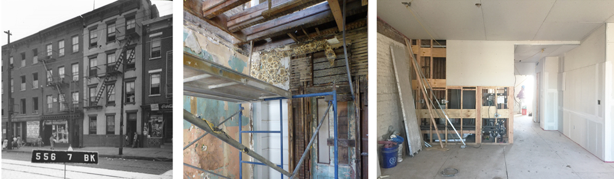
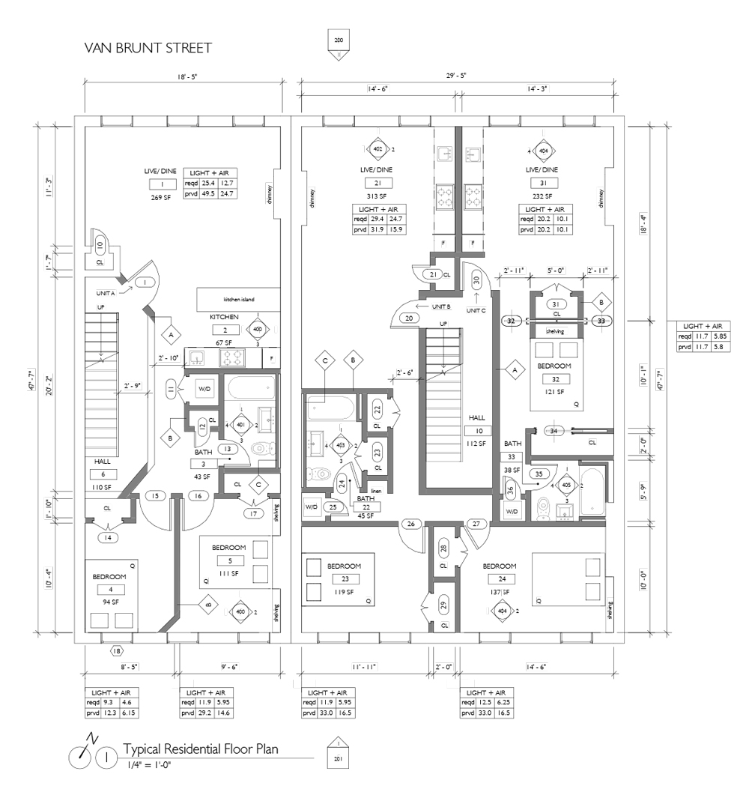

Redhook Lab
Within the Brooklyn floodzone of Redhook, two townhouses side by side and stuck in 2009 are being gut renovated: commercial use on the ground floor and apartments on the upper floors. The narrow sites made the residential plans challenging with creative spatial solution. On the ground floor, two new storefronts will add a contemporary look to the commercial Van Brunt Street with reminiscences of the neighbourhood fishing tradition. Projects under construction.
Project credits of David Cunningham Architecture Planning PLLC


The structure precariousness was clear during the first visit: all the floors were lining towards the central staircase core. Some doors even had the uneven shape of the floor on the bottom wood. From newspapers found on site, it was clear that the building was vacant before Sandy in 2012.
Proposed Storefronts: Being the two townhouses in a flood zone, The storefront have a solid flood proofed base to meet the DFE (Design Flood Elevation) as indicated by the FEMA map. Moreover, because of the flood zone regulations, the ground floor had to be commercial and not residential.
The iron gates lead to an open vestibule with the gas and electrical meters open to the outside.
The narrow sites, together with a high demand of units from the client, made the designs challenging, especially for the light and air calculation. Nonetheless, this led to creative solutions, from diagonal walls to pocket doors.